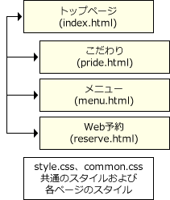

Webサイトの概要・仕様
以下の「テーマ」「ページ構成」「フォルダーおよびファイル構成」「仕様」に従い、Webサイトを完成させなさい。
テーマ
- 「Beer Buddies」を紹介するWebサイトである。
- トップページには、イメージ画像と新着情報の案内文を掲載する。
- 「こだわり」ページでは、お店の紹介文とイメージ画像を掲載する。
- 「メニュー」ページでは、おすすめのメニューを一覧表で掲載する。
- 「Web予約」ページでは、予約フォームを設置する。
ページ構成
下図の通りのページ構成とし、トップページと各ページは相互にリンクさせること。

フォルダーおよびファイル構成
- 「site」フォルダー内に必要なファイルを作成・修正し、Webサイトを完成させること。
- 問題で使用する画像ファイルは、「images」フォルダー内のファイルを使用すること。
- 問題で使用するCSSファイルは、「css」フォルダー内のファイルを使用すること。
- 「material」フォルダーには、「start.html」に関連するファイルが格納されている。関連するファイルの閲覧は「start.html」からWebブラウザーで開き、確認すること。
- 「実技用」フォルダー
- start.html
- 「material」フォルダー
- 「site」フォルダー
- index.html
- menu.html ★新規作成
- pride.html ★新規作成
- reserve.html ★新規作成
- 「css」フォルダー
- common.css
- style.css
- 「images」フォルダー
- aside_menu.jpg
- aside_reserve.jpg
- h1_part.png
- h2_part.png
- img_pride.jpg
- logo.png
- main_visual.jpg
- nav_menu.png
- nav_pride.png
- nav_reserve.png
仕様
以下の仕様で記述すること。
- マークアップ言語：HTML5
- スタイルシート：CSS 2.1およびCSS3
- 文字コード：UTF-8（BOM付推奨）
- 改行コード：CR+LF